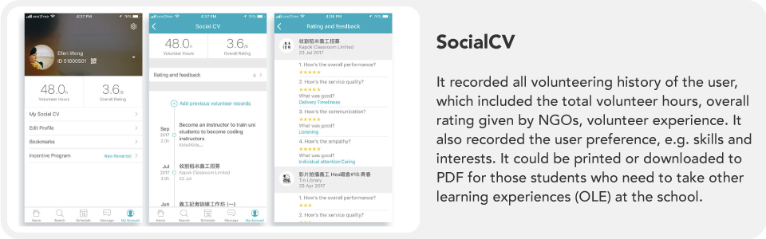
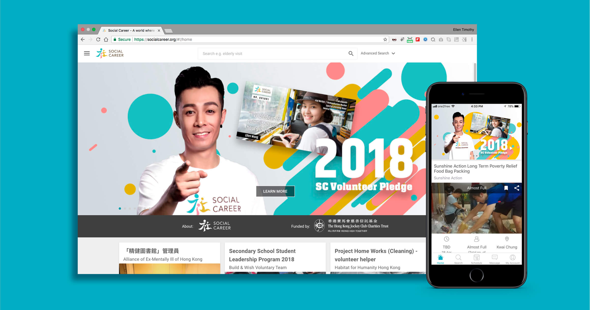
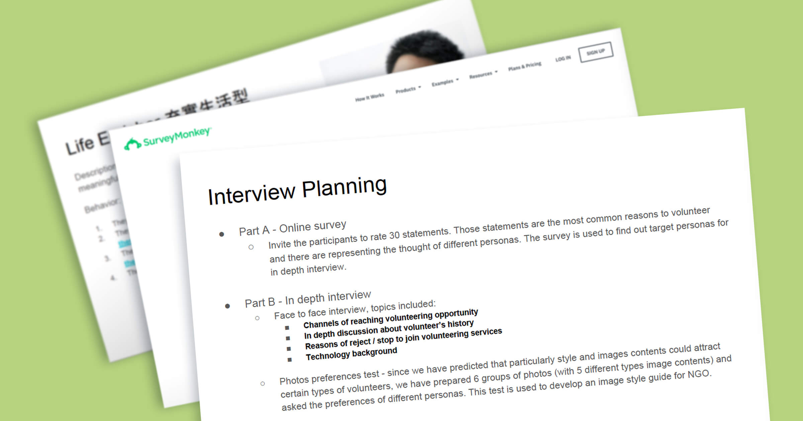
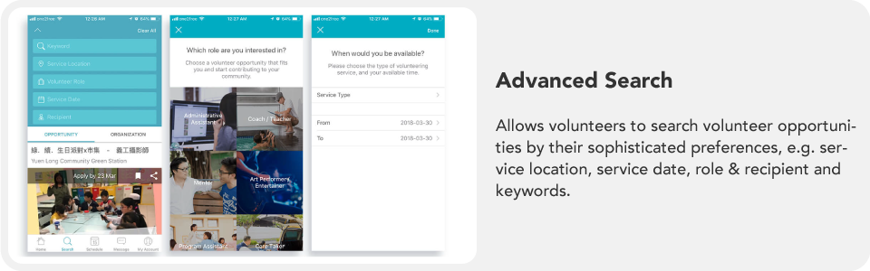
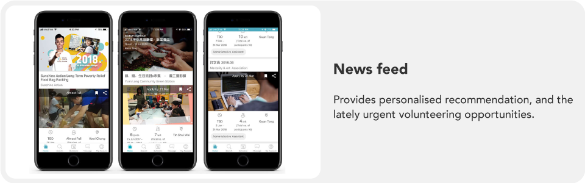
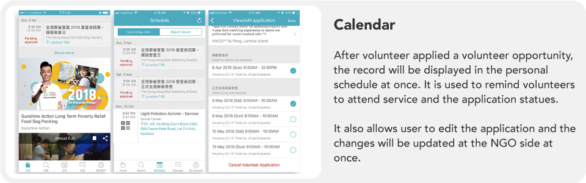
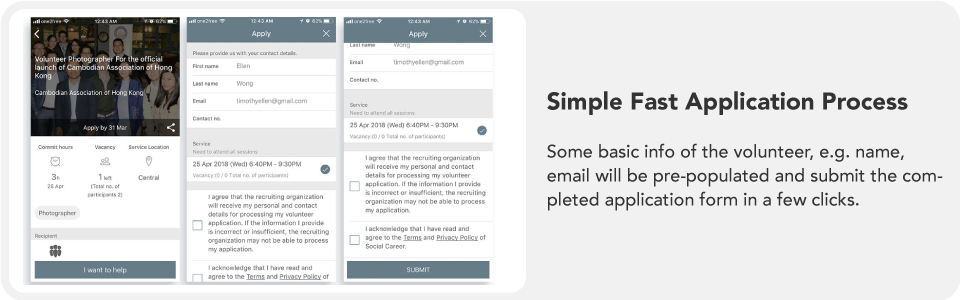
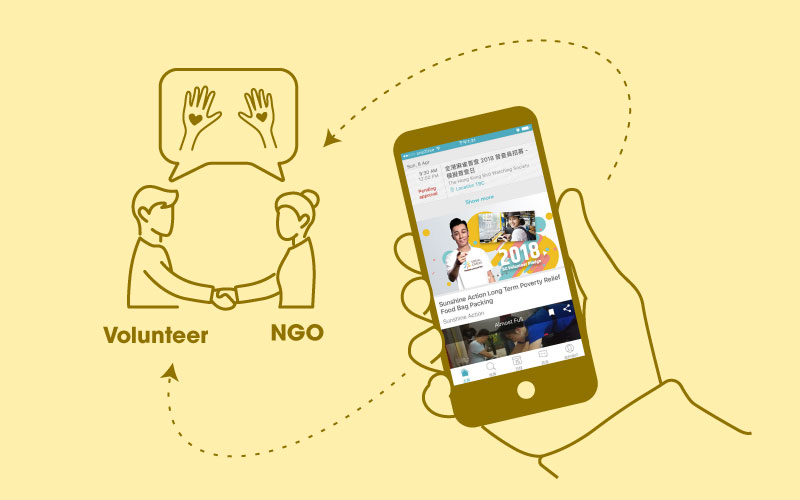

Turning vision into reality: my UX design process for an award-winning NGO-volunteer platform
My Tasks: Product Design, User Research, UXUI design, Usability Testing

What is Social Career?
Social Career is a non-profit technology company which aims to create an increasingly volunteering-friendly environment to encourage public contribution to society.
My Role
Role: UX Architect.
Duties: from the outset of product design to February 2018, I led the UX/UI design of the volunteering management platform for NGOs and volunteers, with both web & native app versions.
Closely collaborated with the Business team, PM and IT team.
Features
Client-side (NGOs): volunteering job posting, member check-in management system, volunteers’ social impact analysis dashboard, QR code check-in.
User-side (Volunteers): volunteering job searching, calendar, personal profile with Social CV, QR code check-in.
Challenge
There are several competitors in the market — one uses ticketing rewards to attract volunteers, another provides training services to NGOs, including volunteer recruitment and training.
- Challenge 1: we should make our product stand out from these competitors, and encourage the public — especially skill-based volunteers — to contribute their time and talents back to society.
- Challenge 2: initially, we had limited insight into the factors volunteers consider when seeking out volunteer opportunities.
- Challenge 3: we didn't know the typical challenges NGOs face when recruiting volunteers.
Our goal for the project
- Develop a scalable, innovative platform that facilitates engagement between NGOs and volunteers.
- Allow NGOs to easily track volunteer hours and manage their recruitment processes.
- Provide volunteers with a fast and user-friendly experience for searching and applying for volunteer opportunities.
- Create a positive social impact by maximizing the generation of volunteer hours.
Research Methodology
At the outset of the project we didn’t know the specific goals for the platform on the NGO and volunteer sides. So I interviewed several NGOs to understand their needs around volunteering management, the current types of volunteering opportunities, and their working modules.
For understanding volunteer preferences, I recruited 10 volunteers aged 15–55 for in-depth interviews, plus an online survey to figure out volunteering motivation.
Discovery — Volunteers’ needs and expectations
- Beginners want recommendations.
- Want fast submission, with applications confirmed within an expected period.
- Don't want to disclose their mobile number in a group WhatsApp.
- Meaningful images and descriptive volunteering info could gain their motivation to submit an application.
- OLE students need to commit volunteering hours.
Problems NGOs are facing
- Choosing volunteers by luck.
- Volunteers always forget to commit to the service.
- Spending long time tracking back volunteering hours in the traditional way.
- Difficult to consolidate feedback from volunteers to fulfil project funder requirements.
- Lack of channels to recruit volunteers.
Various types of volunteering modules
- Group volunteering at one location — e.g. visit nursing home, bazaar volunteering.
- Remote/individual volunteering — e.g. graphic design, typing work.
- Regular / one-off servicing.
Highlight Solutions for Volunteers
Record hours features
Fast check-in / QR code check-in — suitable for volunteers checking in at an event, automatically capturing accurate volunteering hours. Simplified user interface for volunteers who have done remote services, to report hours.
Instant messenger
Provides an IM function that can automatically create a group chat for communicating with volunteers, helping protect volunteers’ privacy (e.g. mobile number). NGOs could also share volunteering posts in the IM to target groups of volunteers.
Highlight Solutions for NGOs
Unfortunately, due to a non-disclosure agreement, I cannot show the product screenshots of this part.
Simplified application approval process
For daily regular volunteering services, NGOs have a heavy workload managing human resources. I designed a calendar viewer to review the applicant list, and functional tools fit to their working process for daily volunteer management.
Provide impact data
Funders always require NGOs to reach certain KPIs. A dashboard was designed for capturing volunteering service data to help NGOs understand development trends and create more successful volunteering programs — resulting in a bigger social impact.
Social Impact
In the past two years, Social Career has been used by more than 300 NGOs and over 10,000 volunteers, resulting in the generation of 100,000 volunteering hours.
Social Career was honored to receive the Hong Kong ICT Startup Bronze Award in the Social Impact category. All credit goes to the outstanding Social Career team — I am delighted to have been a part of this team.







